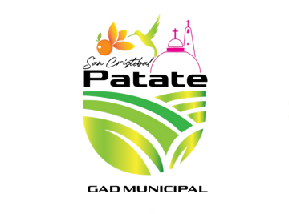

Evolución de visitantes por mes
Comparación con el año anterior

Comparación con el año anterior
Participación en el total
Rangos de edad
Toque un motivo para filtrar
Registros mensuales según cuántas personas con discapacidad reportan
No se filtra por edad ni por género.
Sin visitantes para los filtros elegidos. Pulse «Limpiar filtros».